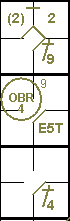

Avance en première base si la balle touche un coureur ou un arbitre.
Le batteur devient coureur et a le droit à la première base sans danger d’être retiré
(à condition qu’il avance vers et touche la première base) quand … Une bonne balle touche un arbitre ou un coureur
dans le territoire des bonnes balles avant de toucher un défenseur
[OBR 5.05(b)(4)].
Dans ce cas, la balle est morte, le frappeur-coureur obtient un coup sûr, et si un coureur a été
touché, il est automatiquement retiré (Retrait par la règle 9). Même s'il s'agit du troisième retrait, le
frappeur-coureur a droit à un coup sûr.
La balle étant morte, aucun coureur ne peut avancer sauf s'il y est contraint.
Cependant,
Si une bonne balle touche un arbitre après qu’elle ait passé un défenseur autre que le
lanceur, ou après avoir touché un défenseur y compris le lanceur, la balle est en jeu.
[OBR 5.05(b)(4)]
Exemple 24:
Avec des coureurs en première et troisième base, la balle frappée par le huitième frappeur dans l'alignement
atteint l'arbitre de deuxième base. La balle est morte. Le frappeur obtient un coup sûr (le chiffre à côté du symbole
indique la zone où le coup a été porté). Parmi les coureurs sur les bases, seul le coureur forcé en deuxième base
avance.

|
action {
batter -> BB
}
action {
batter -> 1B9
,
runner1 -> ++
}
action {
batter -> 1B4
,
runner1 -> +
}
|

|
Exemple 25:
Avec moins de deux retraits et des coureurs en première et troisième base, le coureur venant de la première
base est touché par une balle au sol frappée par le troisième frappeur.
Le coureur touché est éliminé (Éliminé par la règle automatique 9).
Le frappeur-coureur obtient la première base sur le coup sûr.
Si un point est marqué à la suite de cette action par le coureur non forcé, il n'est pas comptabilisé, et
le joueur doit donc retourner à la base qu'il occupait précédemment.

|
action {
batter -> 1B9
}
action {
batter -> E5T
,
runner1 -> + (2)
}
action {
batter -> 1B4
,
runner1 -> OBR9-4
}
|

|
ATTENTION: Si un coureur qui ne touche pas une base est atteint par une balle frappée à
l'intérieur du champ, le frappeur est retiré (retrait automatique 8) ainsi que le coureur (retrait automatique 9). Il
s'agit d'un double jeu.
En revanche, si le coureur est touché par une balle frappée à l'intérieur du champ alors qu'il est
en contact avec la base, seul le frappeur est déclaré éliminé.
Notez que dans une situation de balle haute intérieure (infield fly), la balle demeure vivante et
en jeu ; par conséquent, tous les coureurs peuvent avancer à leurs propres risques.